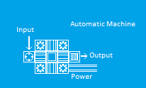
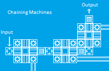
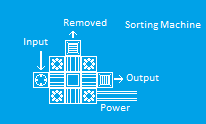

::: Machinery :::
Logical OperatorsGnomes LOVE machinery, and their ability to work with moving parts exceeds that of dwarves. Gnomes can produce a series of special buildings that work as logical operators, allowing fast, efficient computing using axles and gear assemblies, as well as allowing direct interfacing between mechanical parts and gates, without the need for liquid or creature based computing. Each logical operator can take input from any connected axle or power source, with the exception of gear assemblies. The operator will then put the input values together and affect nearby gear assemblies and gates in a predetermined way. There are 7 types of logical operators: NOT operators will return TRUE if they are connected to an unpowered input, and FALSE if they are connected to a powered input. AND operators will return TRUE if they are connected to at least one powered inputs without any unpowered inputs, and FALSE otherwise. OR operators will return TRUE as long as they are connected to at least one powered input, and FALSE otherwise. NAND will return TRUE as long as they are connected to at least one unpowered input, and FALSE otherwise NOR will return TRUE if they are connected to at least one unpowered input without any powered inputs, and FALSE otherwise. XOR requires both a powered input and an unpowered input to evaluate to TRUE, and will return FALSE otherwise. XNOR requires either all of its inputs to be powered or all of its inputs to be unpowered to evealuate to TRUE, and will return FALSE otherwise. After evaluating its inputs, the operator will affect the following devices: Gear assembly - TRUE: Engaged. FALSE: Disengaged. Doors, grates, hatches, bars, and floodgates - TRUE: Open. FALSE: Closed. Upright spikes - TRUE: Retracted. FALSE: Extended. Bridge - TRUE: Retracted. FALSE: Normal. Automatic MachinesFor efficient production, gnomes rely heavily on their powered, automatic workshops. There are several different kinds, all of which perform different tasks, however they are all set up in more or less the same way. To operate an automatic workshop, you will need to construct both the main body of the workshop, and at least one machine input and one machine output tile adjacent to the main body. When provided with a power source attached to one of the corner tiles, the machine will pull in any items resting on the input tiles, process them, and then deposit them on the far side of the output tiles. By placing an input tile connected to another factory machine in this spot, it is possible to chain factories together and create a fully-automated, customized production facility. WARNING: Automatic factories are EXTREMELY dangerous to your gnomes if you don't know what you're doing. As long as they are powered, they will pull in anything they find on their input tiles: items first, and then any creatures that happen to be standing around. Do not attempt to load them while they are in operation! Of course, this means that with proper planning, automatic factories can be weaponized by clever artificers. For more details, see the "Machine Safety" section on the Tips page. There are several kinds of automatic production workshops: The stonecutter and woodcutter are essentially the same, they process boulders or logs into blocks or planks. You can produce far more blocks through this method than by cutting them at the mason or carpenter - 16 blocks per boulder and 8 blocks per log. Between this and the furniture assembler, you can get far more output for your resources than would be possible otherwise. The furniture assembler turns blocks into furniture; you can set which kind you want by running the 'adjust settings' reaction. Most furniture takes 5 blocks to produce, though some will take less. The quality of the furniture will be based on the average quality of the mechanisms used in the machine. The products will have the same percentages as a worker of the same level, rounded down. So a machine using all masterwork mechanisms (level 5) will be on the same level as a proficient (level 5) manual worker. Only items produced from blocks will have quality levels; while you can throw other stuff into the machine and see what comes out, the items will always be of base quality. The autotailor produces items such as backpacks, ropes, waterskins, and bags from leather or cloth. It cannot produce clothes. The grinder pulverizes any item into powder, then dumps it out. If it is dumped directly onto another machine's input tile it will be forbidden by default, preventing gnomes from cleaning it up and allowing it to be used in the next step on the production line, however if it is not used immediately after, the powder will be lost, so it should be poured directly onto the input tile for an item decorator machine to make the maximum use of it. Otherwise, it is a good means of getting rid of worthless items like vermin remains or body parts. The item decorator takes ground-up objects and furniture or crafts, then encrusts the item with powder. The arc smelter takes any kind of ore and extracts the metal from it. It does not need fuel, but it does require a dynamo and a great deal of power to run. It will also turn organic materials into ash, which can be useful for farming. The thunder forge lets you produce metal items from bars, much like a regular forge. Like the arc smelter, it runs on electric plasma, so while you don't need fuel you do need to have produced a dynamo and have access to a great deal of power. The sorting machine does not alter items, but it does let you split a production line. You can select any item or material from its settings menu. For this to work properly, you must have one input and two output tiles, one of which is opposite the input tile. The sorter will send most items out through the straight path, but will send items that match the selection criteria out the side exit. Since the sorter can take any item without being damaged or altering the item, it is also useful for transporting items or combining two seperate production lines. You can also split a production line in half randomly by giving the sorter two outputs that are both perpendicular to the input, without giving it a direct output. The cart loader does not technically work in the same way as the automatic factories, but it is often used alongside them. Any items placed on top of it will be loaded onto any minecart adjacent to the loader. This is easiest if you make an automatic system to stop the minecart and then start it up again when it is filled (for example, using rollers and a floodgate), but if a moving minecart happens to pass by at the moment the loader 'ticks', it will place items onto the cart. The more power provided to the loader, the more frequently it will 'tick', making it more likely to place items on a moving cart. Like other automatic machines, the loader will pull in creatures if it has no access to items, stunning them for a few moments and depositing them onto a cart. This is generally harmless - unless the cart is in motion. The Aerial Transport Device and the Drilling Rig can also be chained with machinery. The Aerial Transport Device can be connected to a Machine Input and will launch items placed on it. The Drilling Rig can be connected to a Machine Output (the output tile must be adjacent to be building itself, NOT to the level below it where the liquid comes out) and will suck up items placed directly below the tip of the drill. It can suck up creatures too, but they will not survive the journey. |